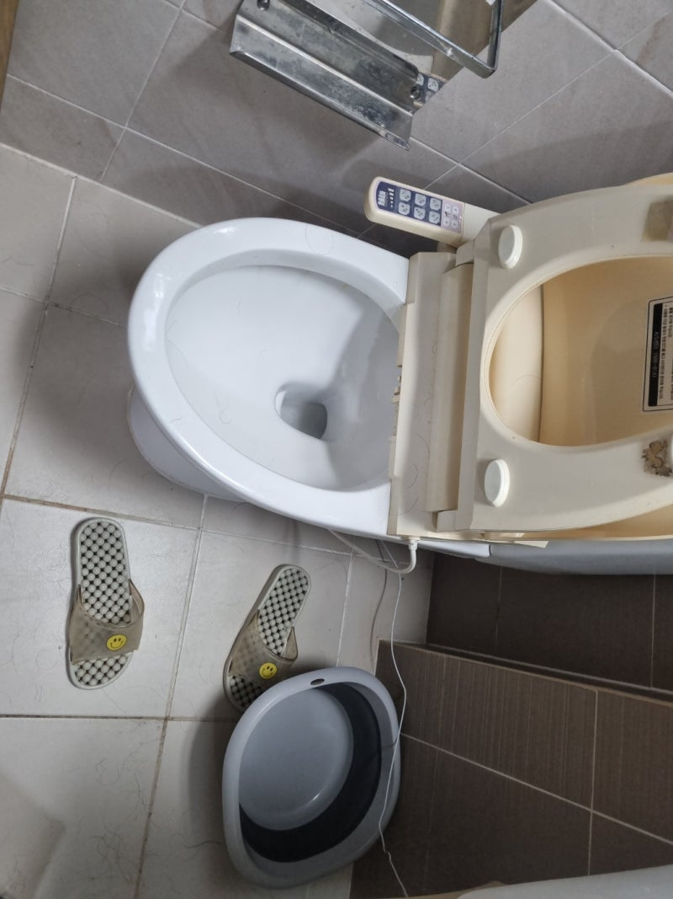
01변기막힘
이물질·휴지뭉침·배관 역류까지. 내시경으로 위치를 확인해 변기 손상 없이 뚫습니다.
부산 · 창원 · 김해 · 양산 24시간 긴급출동
하수구·변기·싱크대 막힘부터 고압세척까지.
내시경으로 막힌 위치를 정확히 확인하고, 재발까지 막습니다.
OUR WORK
가정집부터 상가·식당·공장까지. 증상에 맞는 장비와 방식으로 처리합니다.

01이물질·휴지뭉침·배관 역류까지. 내시경으로 위치를 확인해 변기 손상 없이 뚫습니다.
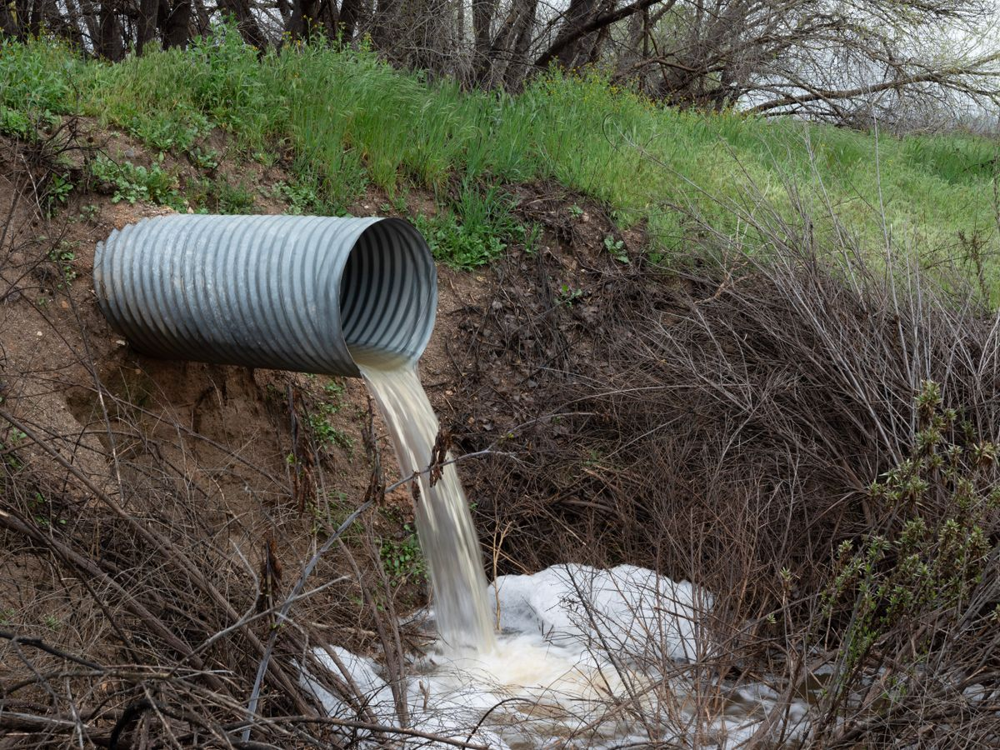
02바닥 배수구·오수받이·집수정 막힘. 고압세척으로 기름막과 슬러지까지 제거합니다.
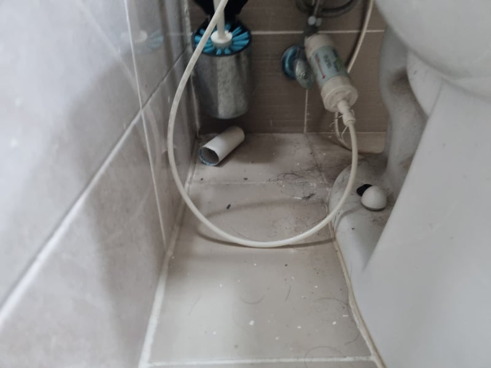
03주방 싱크대 물넘침·역류. 음식물 찌꺼기와 기름때가 굳은 배관을 뚫어드립니다.
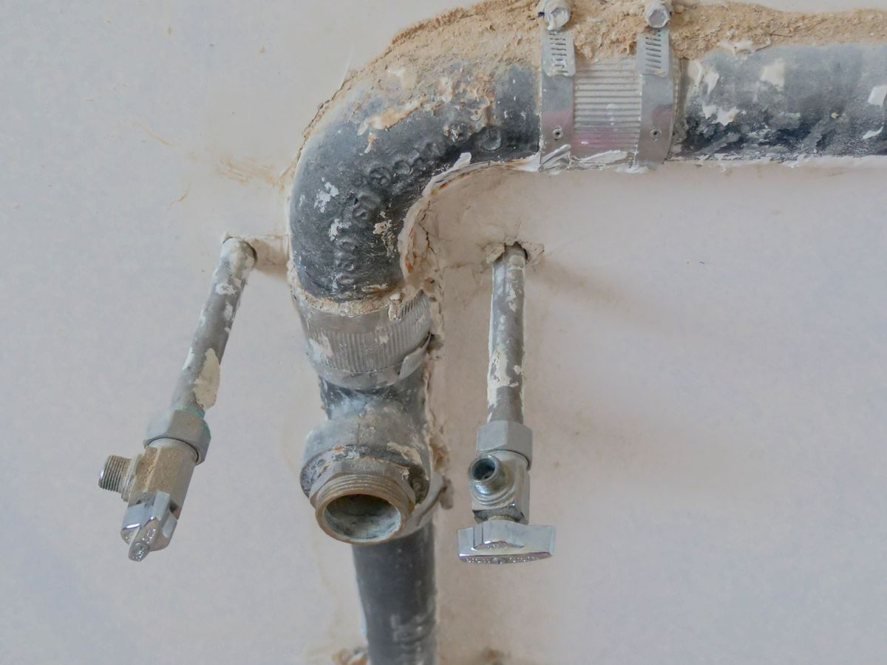
04물은 내려가는데 냄새가 올라온다면 트랩·봉수·연결부를 점검해 원인을 잡습니다.
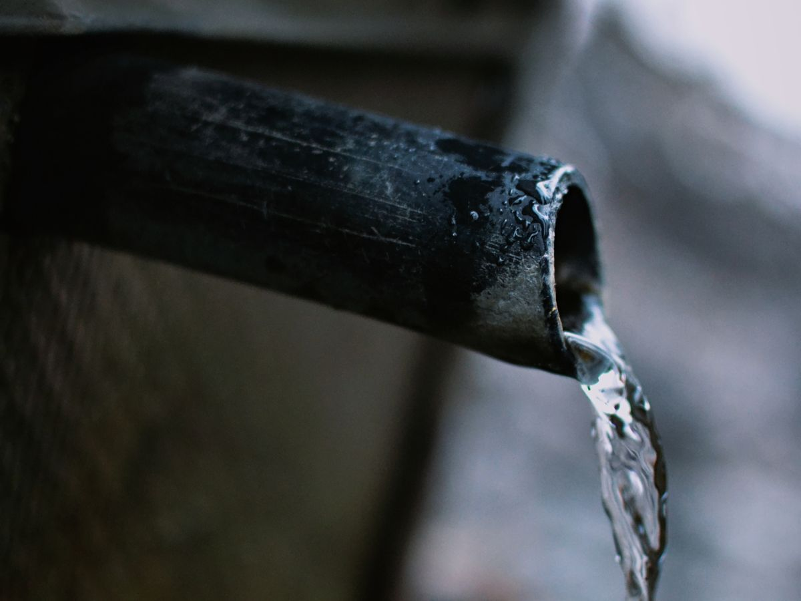
05상가·공장·다세대 우수관과 오수관 내부를 고압으로 세척해 흐름을 정상화합니다.
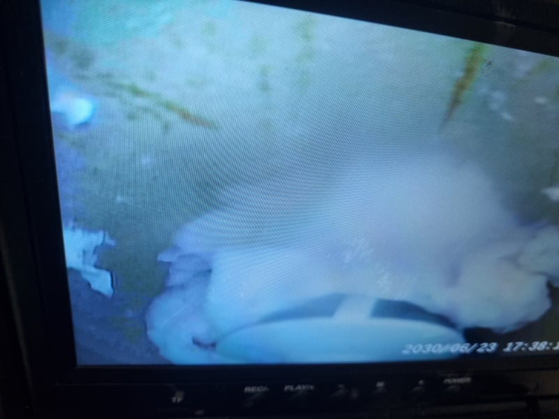
06관 내부를 카메라로 확인해 막힌 위치·관 상태를 보고 정확한 작업 범위를 잡습니다.
EQUIPMENT
손으로 흔드는 임시 처치가 아닙니다. 전문 장비로 원인부터 잡습니다.
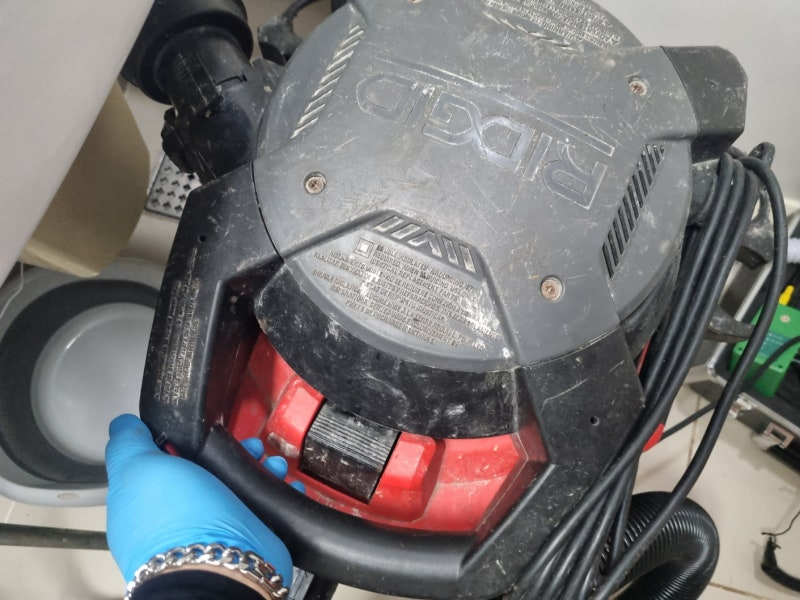
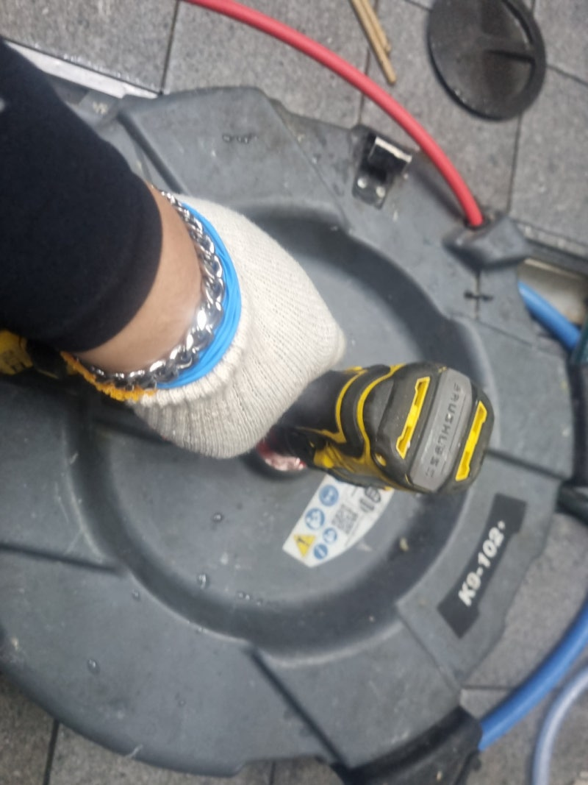
겉만 보면 진짜 막힌 지점을 놓칩니다. 카메라로 위치를 먼저 확인합니다.
입구만 흔드는 임시 처치가 아니라 깊은 구간 기름막·슬러지까지 제거합니다.
이전 작업 후에도 안 뚫린 현장을 다시 확인해 단계적으로 풀어냅니다.
뚫는 데서 끝내지 않고 관리할 수 있는 점검 지점까지 알려드립니다.
PROCESS
전화 한 통이면 됩니다. 현장에서 이렇게 진행합니다.
증상과 위치를 말씀해 주시면 가까운 기사가 출동합니다.
내시경으로 막힌 지점과 관 상태를 확인하고 작업 범위를 정합니다.
증상에 맞춰 관통 또는 고압세척으로 막힘을 제거합니다.
물을 흘려 배수 반응을 확인하고 재발 방지법을 안내합니다.
PRICING
현장을 확인한 뒤 작업 전에 비용을 먼저 말씀드립니다. 동의하신 금액 외 추가요금은 없습니다.
5만원부터
이물질·휴지·음식물 막힘 등 일반 관통 작업 기준.
8만원부터
바닥 배수구·오수받이·집수정 막힘, 슬러지 제거 포함.
현장견적
관 길이·상태에 따라 달라 전화·카톡으로 먼저 안내드립니다.
※ 위 금액은 일반적인 기준 예시이며, 막힘 정도·위치·심야 출동 여부에 따라 달라질 수 있습니다. 정확한 비용은 현장 확인 후 작업 전에 안내드립니다.
CASES
부산·경남 전역에서 진행한 실제 현장 일부입니다.
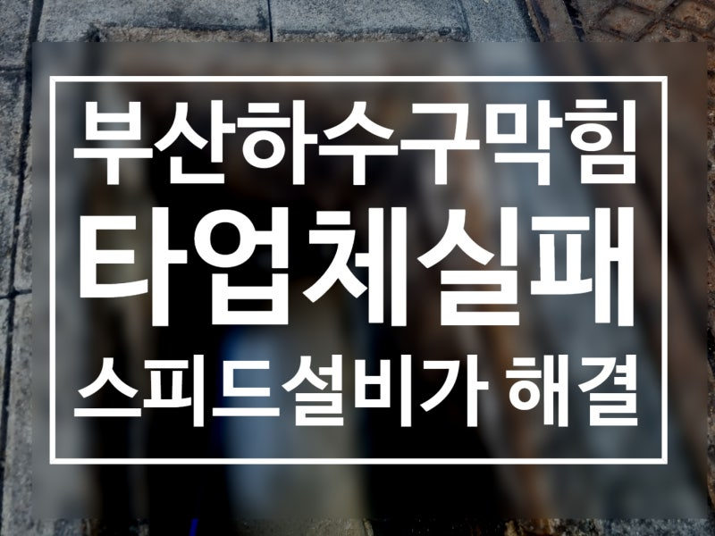
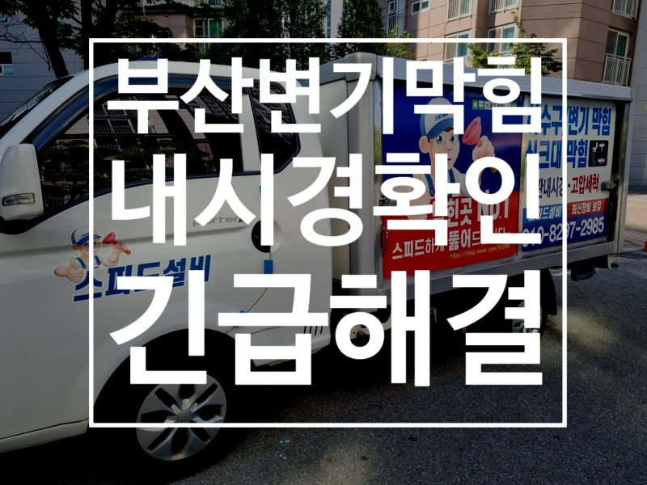
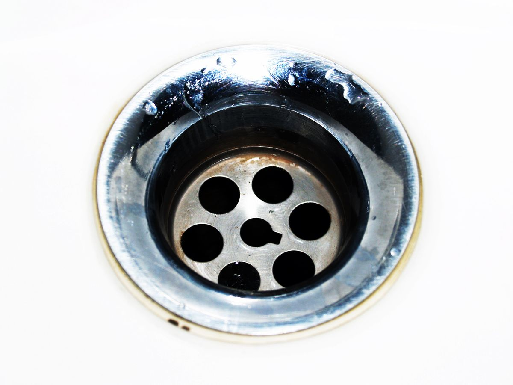
※ 실제 현장 사진이며, 일부는 개인정보 보호를 위해 모자이크 처리되었습니다.
REVIEW
“다른 곳에서 못 뚫은 하수구였는데 내시경으로 위치 찾아서 깔끔하게 해결해 주셨어요.”
— 부산 상가 사장님
“밤에 변기가 막혔는데 바로 와주셔서 살았습니다. 작업도 빠르고 깨끗했어요.”
— 김해 거주 고객
“왜 막혔는지, 앞으로 어떻게 관리해야 하는지까지 알려주셔서 믿음이 갔습니다.”
— 창원 식당 운영
전화 전에 실제 후기와 시공 사진을 직접 확인해 보세요. 네이버 블로그에 현장 작업 기록을 꾸준히 올리고 있습니다.
견적·출동 문의
전화가 가장 빠릅니다. 온라인으로 남기시면 확인 후 연락드립니다.
전화 즉시출동 010-8287-2985 카카오톡으로 사진 보내고 견적받기